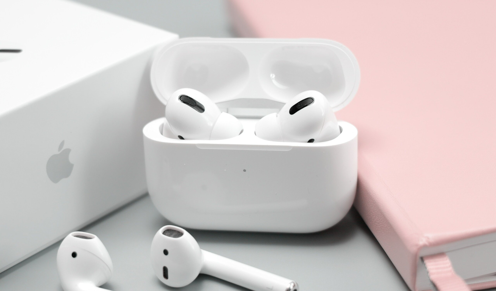

Airpods 2

Les AirPods vous offrent 5 heures d’écoute1 et 3 heures de conversation sur une même charge. Et ils peuvent vous accompagner partout, grâce à leur boîtier qui permet de multiples recharges et livre plus de 24 heures d’autonomie3. Besoin d’une recharge rapide ? En plaçant vos AirPods dans leur boîtier pendant 15 petites minutes, vous obtiendrez 3 heures d’écoute4 ou 2 heures de conversation5.
Airpods pro
AirPods Pro sont les seuls écouteurs intra-auriculaires dotés d’une technologie de réduction active du bruit qui s’adapte en continu à la géométrie de vos oreilles et à la forme que prennent les embouts. Vous voilà dans votre bulle. Vous pouvez vous concentrer sur ce que vous écoutez.
Airpods max

Après le succès retentissant des AirPods Pro sur le marché des* true wireless*, Apple se lance dans une nouvelle quête : redéfinir notre vision du casque Bluetooth avec son AirPods Max. 20h d'autonomie